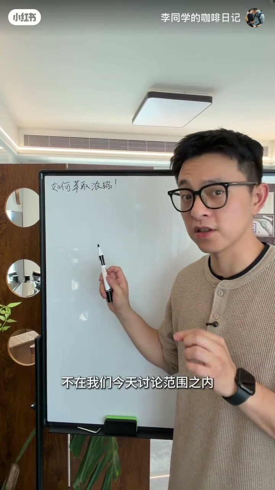
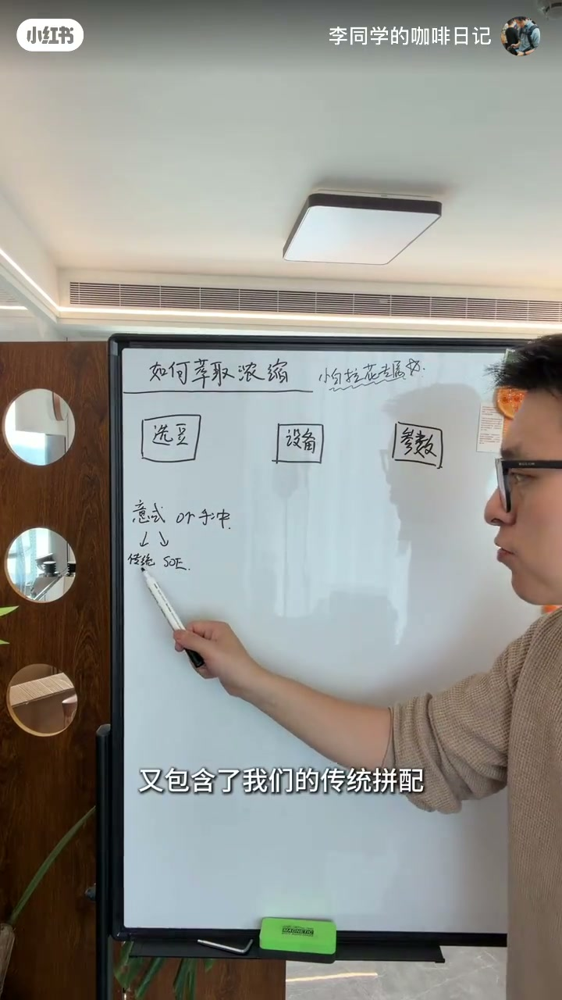
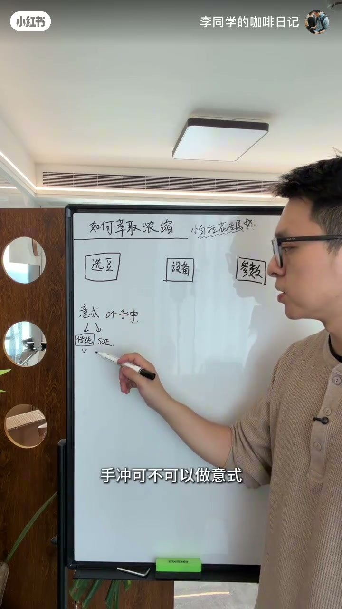
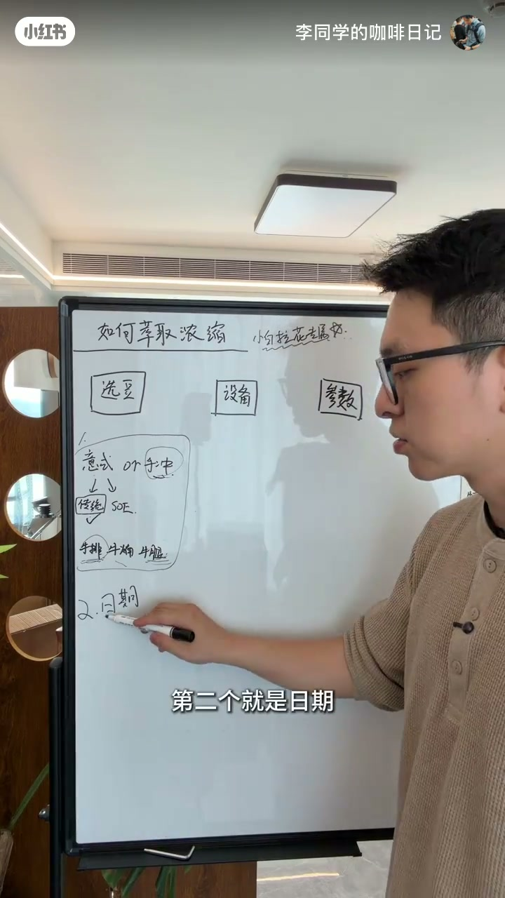
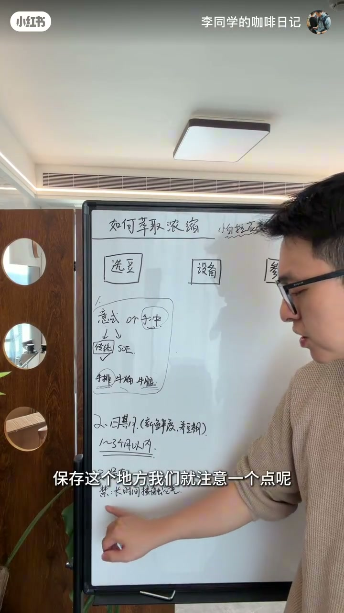
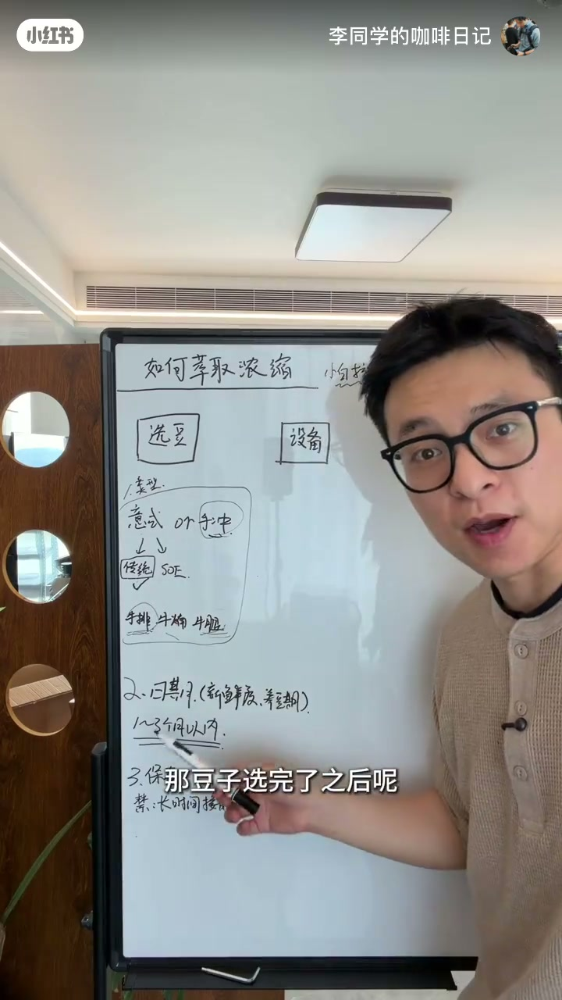
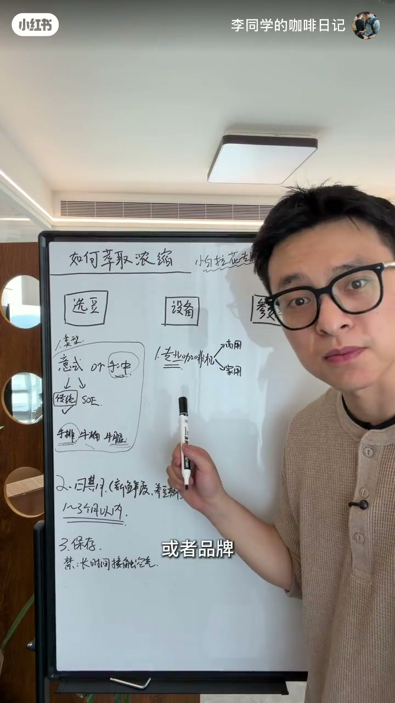
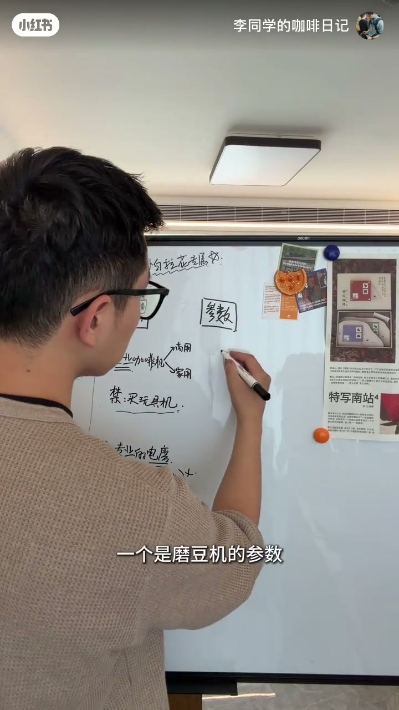
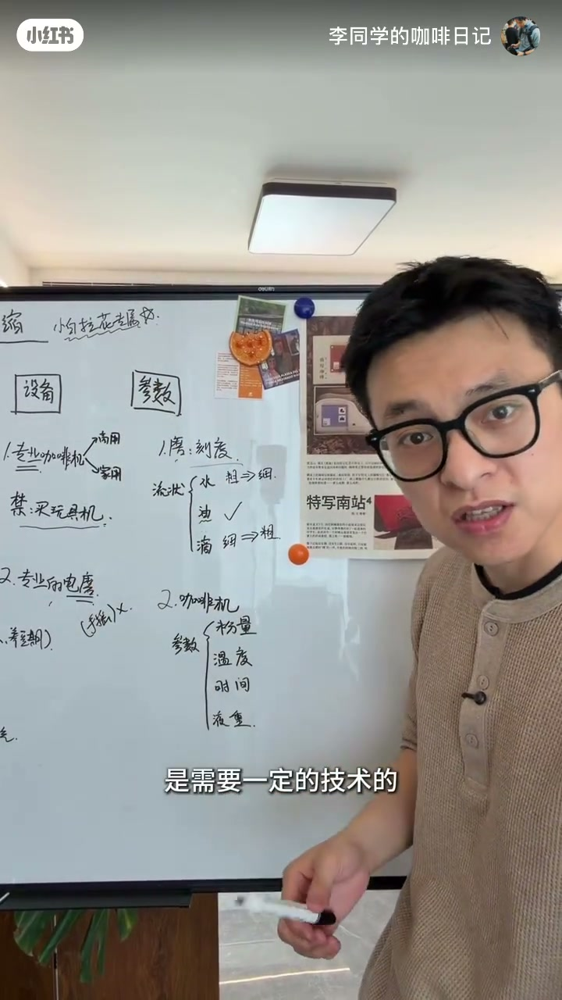
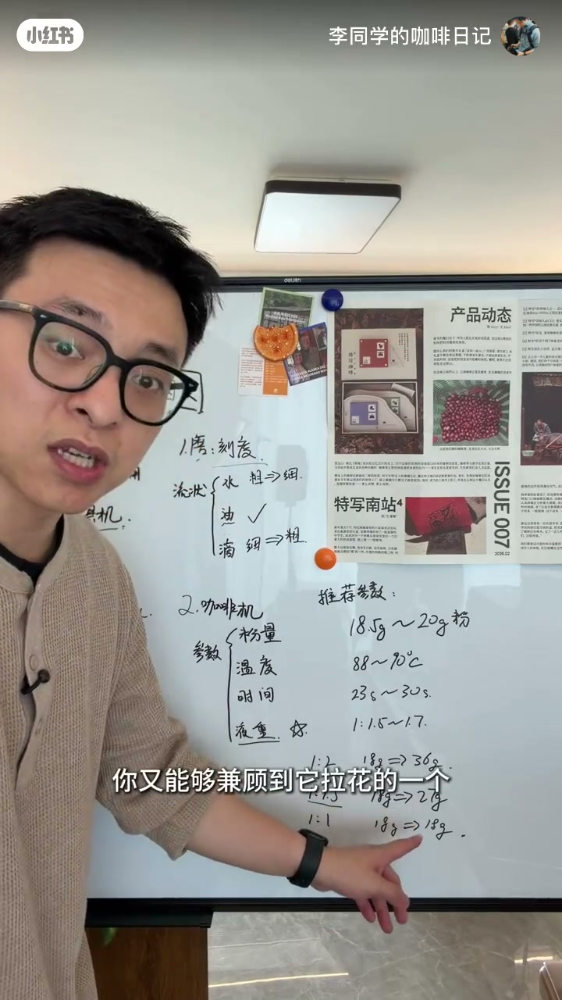

内容要点
在家学拉花系列第一课，主题是萃取一杯适合拉花的浓缩咖啡。UP 主先叠甲：讨论的是家庭小白做出适合拉花的浓缩，好不好喝不在今天范围。方法论分三步——选豆（意式传统拼配、中深烘焙、1-3个月内新鲜烘焙、养豆十天半月、防空气保存）、设备（专业咖啡机+专业电磨，禁玩具机与手摇硬磨）、参数（研磨看流速「水油滴」三态而非刻度，推荐18.5-20克粉/88-90度/23-30秒/液重比1:1.5-1.7）。所有萃取调整都结果导向，服务拉花。
知识结构
讨论家庭小白如何做出适合拉花的浓缩，好不好喝不讨论。三步法：选豆、设备、参数。
咖啡豆分意式/手冲；意式含传统拼配与SOE。拉花选传统拼配——关键词：意式咖啡、中深烘焙；手冲与SOE尽量不选。
SOE做手冲/手冲做意式都可以，像牛排部位一样是个人喜好，但建议按品牌建议做对应咖啡。
选新鲜烘焙1-3个月内豆子才油丰富油脂。保存禁止与空气长时间接触，用不完放回原包装；豆仓不长期存豆。豆子不能太新鲜，养十天半个月再用，太新鲜萃取冒大泡不利拉花。
必须专业咖啡机（商用/家用皆可，但要正经品牌，禁玩具机）；配专业电磨，手摇做意式研磨度会累死。
刻度在交流中没意义。看流速三态：像水→粗了往细调；点滴或不出液→细了往粗调；像油流下→OK。结果导向反推研磨。
18.5-20克粉、88-90度水温、23-30秒、液重比1:1.5-1.7。比常见1:2更浓，兼顾拉花丝滑与口味。
想更适配拉花：增加粉量或降低液重，浓缩更丝滑有支撑力，但不一定更好喝。所有萃取都为拉花服务。
适合拉花的浓缩 = 传统拼配中深烘焙豆（1-3月内新鲜、养豆10-15天、防空气保存）× 专业咖啡机与电磨 × 结果导向参数（按流速三态调研磨，粉18.5-20g、水温88-90度、时间23-30秒、液重比1:1.5-1.7）。核心逻辑：一切调整看结果（流速、状态、拉花效果），不纠结刻度数字。
00:00-00:17开场叠甲：目标只是「适合拉花」的浓缩
视频开头 UP 主先把讨论边界划清楚：「我们今天讨论的是家庭小白如何在家里做出一份适合拉花的浓缩咖啡，这杯浓缩好不好喝不在我们今天的讨论范围之内。」这个定位贯穿整节课——所有建议都服务于拉花效果。
整节课分成三步：选豆、设备、参数。结构清晰，方便观众对照执行。

00:17-01:47选豆：传统拼配是拉花的正解
第一步选豆。市面上常见的是意式和手冲这两款咖啡豆，意式咖啡里又包含传统拼配和 SOE——SOE 特指浓缩咖啡（意式单一产地）。一般来说市面上的咖啡豆都能归到这三类。
要做适合拉花的浓缩，选传统拼配。「所以大家要先要去选择咖啡，我们就去找这些关键词：意式咖啡、中深烘焙；而手冲、SOE 这些就尽量不选。」
关于豆类互转，UP 主用牛排比喻解释：咖啡豆像牛身上不同部位——牛排能炖能烤能蒸，但经验告诉我们煎着最好吃。意式豆用来做 espresso 当美食喝，某些产地风味的豆子适合手冲。理论上想怎么做就怎么做，但建议按包装上的品牌建议做对应咖啡。


01:47-03:16日期、保存与养豆：油脂从哪里来
第二个关键点是日期：选择新鲜烘焙一到三个月以内的咖啡豆。只有这种新鲜豆子才能萃出比较丰富的油脂，「因为油脂有绝大部分是靠刚烘焙完里面新鲜的二氧化碳所形成的」，放久了就没了。
保存环节只要守一个点：禁止与空气长时间接触。拿出来了就尽量马上做；用不完的放回原包装封好。像豆仓这种敞口容器打开放太久也不好，没研磨完就把里面的豆子清掉或倒出来，不要一直放在里面。
豆子还不能太新鲜——最好养个十天半个月再使用。太新鲜的豆子萃取出来会冒大泡，大泡很硬且分解特别快，非常不利拉花。养好的豆子萃出来是丝滑的，像打发绵密的奶泡一样反光发亮，这样的浓缩才是好浓缩。



03:16-04:15设备：专业咖啡机与电磨，禁玩具机
豆子选完进入设备。要求只有一条：得是专业的咖啡机。专业既可以指商用也可以指家用，但无论哪种都必须满足「专业」——是正经做咖啡的公司或品牌做出来的机器。配置可以差一点，可以没有锅炉、用泵加热，但必须出自专业咖啡品牌。
禁止买玩具机。UP 主特别提醒：意式咖啡领域里，那种一千块钱不到、整得很大一台、宣传得天花乱坠的意式咖啡机「扯蛋不可能的」，意式咖啡机有门槛。机器这一关过不了，后面的都白搭。
第二个必须件是专业电磨。特别强调「电磨」——不是手摇磨不到意式研磨度，而是用手摇去磨意式研磨度真的会累死，「它转很久的，一般人转不下来的」。有专业咖啡机+专业电磨就够了。

04:15-05:31研磨度：看流速，不看刻度
豆子与设备解决后进入参数环节。第一个参数是磨豆机刻度。UP 主直言刻度在交流中意义不大：别人问「3的刻度够不够」「6的刻度够不够」是无法回答的，因为两个人大概率不用同一个磨；就算用同一个磨，也会因刀盘原始间距产生偏差。
重要的是流状——浓缩从咖啡机流下来的状态。UP 主把它归纳为三态：水、油、滴。流状像水，说明研磨度粗了，往细调；流状是点滴甚至不出液，说明研磨度细了，往粗调；流状像油一样顺畅流下，研磨度就 OK，不用动。
核心方法论：意式咖啡的调整永远结果导向——以最后做出来的味道或状态反推参数，而不是先找刻度再猜流状。

05:45-06:45推荐参数：粉量/水温/时间/液重比
磨调完进入咖啡机参数：粉量、温度、时间和液状。UP 主提醒这些参数相互影响，其实非常复杂，想要做得好喝需要一定技术——所以直接把推荐参数给到观众。
推荐区间：18.5-20克粉（量力而行，机器只能装17克就把粉碗顶满）；88-90度水温；时间放宽到23-30秒；液重比1:1.5到1.7之间。
UP 主特别讲解液重比：「大家听到的可能都是1比2的比例，18克出36克液。但如果你想要浓缩更滑、更有支撑力，可以把液重比往下缩，萃1:1.5左右，18克粉萃27克液，甚至极端一点1比1。」在家做不能完全贴合拉花需要，还是要喝的，所以1:1.5左右最平衡——兼顾拉花丝滑度与口味。

06:45-07:35拉花适配：增粉量或降液重
总结收尾回到拉花适配：如果想让浓缩更适配拉花，可以选择增加粉量，或者降低液重，「这些都可以让你的浓缩咖啡更加丝滑、更加有支撑力，但是不一定会更好喝」。
UP 主重申课程立场：今天讨论的所有浓缩萃取，都是为了拉花服务的。以上就是在家萃取适合拉花浓缩的方法论。

完整转录（239段）
以下文本由 Whisper medium 模型自动转录，可能存在少量识别误差，已尽可能修正。
嗨大家好
今天是我们在家里学习拉花的第一堂课
就是如何萃取浓缩咖啡
那讲这个问题之前呢
我先给自己叠个甲
我们今天讨论的是家庭小白
如何在家里做出一份适合拉花的浓缩咖啡
这杯浓缩好不好喝
不在我们今天的讨论范围之内
这个问题依然是分成三步啊
首先第一步就是选豆
第二个是设备
第三个就是参数
那我们先从选豆开始
常见的话有意识或者手冲这两款咖啡豆
意识咖啡里面呢
又包含了我们的传统拼配
跟我们的一些SOE
SOE它其实是特指的浓缩咖啡
这个ease special的意思
一般来说我们在市面上看到的咖啡豆
都可以把它归到这三个类里面
那我们要去做一杯适合拉花的浓缩
我们要选择的是传统
所以大家要先要去选择咖啡
我们就去找这些关键词
意识咖啡
终身烘焙
而手冲SOE这些呢
就尽量不选
选豆这边经常会有人问的问题就是
SOE可不可以做手冲
手冲可不可以做意识
意识可不可以做手冲
做一个比喻就是
这些咖啡豆我们把它想象成
牛身上的部位
比如说我们会有牛排
牛腩
牛腿好吧
牛排你可以拿去炖拿去烤拿去蒸都行
那根据我们人类总结的经验来看
我们发现牛排这个部位
它就是煎着吃最好吃
大家就会经常的把牛排专门拿来去煎
就像这种意识咖啡豆
我们就是喜欢用来做成special当美食喝
某一些地方特定的部位
我们就是喜欢拿来做手冲
因为它有特殊的产地风味
所以这就是一个个人喜好问题
没有谁对谁错
那我只想要告诉大家
就是这些豆子
理论上你想怎么做就怎么做
但是我还是建议大家
去按照这些咖啡豆上面的一个品牌建议
去做它对应的咖啡就好了
第二个就是日期
这里的话我们一般会选择新鲜烘焙
一到三个月以内的咖啡豆
只有这种新鲜的咖啡豆
我们才能够萃取出比较丰富的油脂
因为它那个油脂有绝大部分
就是靠着一个刚烘焙完
里面新鲜的额氧化碳所形成的
所以你放久了就没有了
但是有很多朋友他说
我的豆子就是一到三个月以内的
甚至一个月以内的
但它就是萃不出来
那这个时候还有一个问题
就是你豆子的保存
保存这个地方
我们就注意一个点
禁止与空气进行长时间的接触
只要它拿出来了
我们就尽量马上去做它
那用不完的怎么保存呢
我这种觉得在家里面最省心
最好用的保存方法
就是放在它的原包装里面
把这个地方封好了
或者是说像这种豆仓
你打开放在里面放太久了
也是不好的
如果你没车完的话
你就把里面的清掉或者是倒出来
不要把豆子一直放在里面
这里补充一下
这个豆子它也不能太新鲜
它最好还是养个十天半个月左右
再去使用
如果太新鲜的咖啡豆
你会发现它萃取出来的时候
是冒大泡的
这种大泡它会很硬
而且分解的特别快
是非常不利于我们拉花的
那我们养好了的咖啡豆
它留下来是很丝滑的
就跟我们打发绵密的奶泡一样
非常的反光发亮的
这种浓缩才是一个好浓缩
豆子选完了之后呢
我们就来到了设备
只有一个要求
就它得是专业的咖啡机
我的专业呢
它可以指的是商用
它也可以指家用
它不管是商用的还是家用的
它都必须要满足专业的
它必须要是一个
这儿八经的公司或者品牌
所做出来的咖啡机
也许它的配置可以差一点
它可以没有锅炉
可以是蹦
但它得是一个专业做咖啡的品牌
禁止买玩具机
尤其在意识咖啡里面
你看到那种一千块钱都不到的
意识咖啡机
给你整那么大一台
跟你说多么多么好
扯蛋不可能的
意识咖啡机它就是有门槛的
买了这个的话
你机器这一关过不了
第二个我们需要有一台专业的电磨
这里特别强调的是电磨
有很多朋友他会用手摇去做
不是说手摇磨不到意识的研磨度
而是你想要用手摇去做意识的研磨度
真的会累死你了
它转很久的
一般人转不下来的很累的
这个地方我们有一台专业的咖啡机
有一台专业的电磨就OK了
豆子全好了
设备解决好了
接下来我们就要看一下
如何去调参数了
一个是磨豆机的参数
刻度
刻度要跟大家好好讲一下
有很多朋友他来问的时候
他会直接问
老师我这个3的刻度够不够
这个6的刻度够不够
这样子的提问是没有办法回答你的
因为刻度是在沟通交流的时候
是一个比较没有意义的一个参考项
因为我俩用的大概率不会是一个磨
就算是一个磨的情况下
也会因为你刀盘之间原始的一些间距
而产生一定的偏差
所以刻度它其实没有太重要
那什么是重要的呢
重要的在于你的流状
流状就是我们这个意识咖啡机
这个地方浓缩流下来时候的状态
一般来说我们这个流状会有三个状态
我叫它水 油 滴
如果你的流状是像水一样的
那说明我们的研磨度粗了
我们需要往细了调
如果你的流状是点滴的状态
甚至不出液
那我们可以判断研磨度细了
我们要往粗了调
那如果你的流状是像油一样流下来的
那我们的研磨度就OK
这种情况我们一般是不会动研磨
所以大家现在知道磨这个东西应该怎么调了
它应该是根据结果的导向去反推它的
而不是你先去找它多少的研磨度
再去猜它底下的流状
意识咖啡的调整永远都是结果导向的
就是以你最后做出来的这杯咖啡的味道
或者是它的状态调整你的参数的
而不是先就去调整参数
磨调完了我们就来到了咖啡机的参数
粉量 温度 时间和液状
你用多少的粉
在多少的水温下
跑了多少秒
出了多少的咖啡液
这里面这些参数它都是相互影响的
所以实际上它是一个非常复杂的东西
所以想要做出来一杯非常好喝的咖啡
是需要一定的技术的
那我们这里就直接把推荐的参数给到大家
我们建议给到18.5到20克的粉
当然这个量力而行
有一些咖啡机你只能装到17克的
那你就直接把它顶满了装就好了
88到90度的水温
那时间上的话我们可以宽容一点
23秒到30秒之间
那液液中这边我们推荐给到的是
1比1.5到1.7之间
主要是液液中这个地方比较重要
大家听到的可能都是1比2的比例
是18克净36克粗
那如果你想要你的浓缩咖啡
更加的滑更加的有支撑力
你可以把你的液液中往下缩
我们可以催1比5左右
就是你18克的液体进去
测一个27克
甚至你极端一点
你都可以1比1
但是我们在家里做
你也不能全去贴合
这个好不好拉花这个点
我们还是要喝的
所以我的建议就是1比1.5左右
这个位置你又能够兼顾到
它拉花的一个丝滑程度
同时它又会有一个比较好的口味
所以我们推荐在1比1.5到1.7左右
这个比例
大家直接按照这个推荐的参数去催就好了
所以在参数这里
如果你想要你的浓缩
更加好适配拉花
你可以选择增加粉量
可以选择降低液重
这些都可以让你的浓缩咖啡
更加的丝滑
更加的有支撑力
但是不一定会更好喝
所以我们今天讨论的所有的浓缩萃取
都是为了拉花服务的
那么以上就是在家里如何萃取
适合拉花浓缩的一个方法论
希望对大家有帮助